A beautiful clock for the desk, the bedside table or the kitchen shelf.
Turn an iPhone, iPad or Apple TV into a full-screen analog clock, with designs from classic watches to playful scenes for kids, the weather on the dial and a night mode that dims the face after dark.
One purchase for iPhone, iPad and Apple TV. Requires iOS, iPadOS or tvOS 17 or later.
Aviator · Timepieces
Five of the 43 designs, drawn live with your time. The app has them all, and a Studio to make your own.
Gallery
43 designs in four collections
Timepieces such as Aviator, Tide and Nightlife. Pop styles such as Neon Drive, Sakura Pop and Pixel Arcade. Playful scenes for kids such as Space Cadet, Under the Sea and Dino Jungle. And video backgrounds. The original faces from the first version are still there.
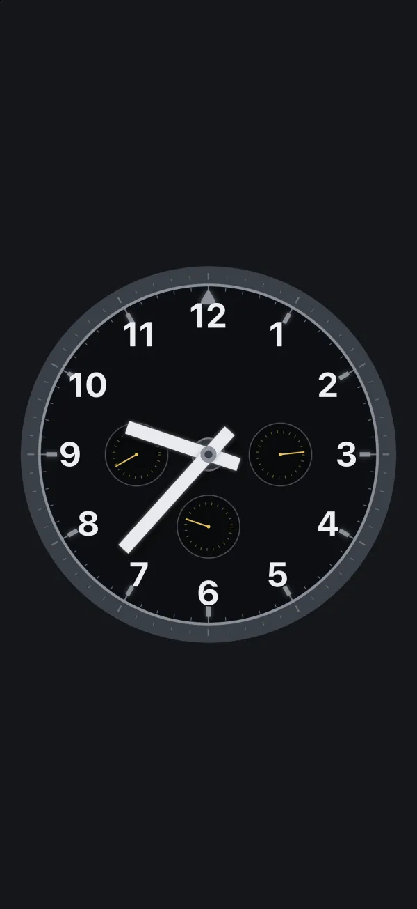
AviatorTimepieces
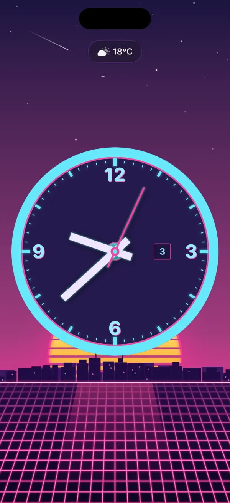
Neon DrivePop
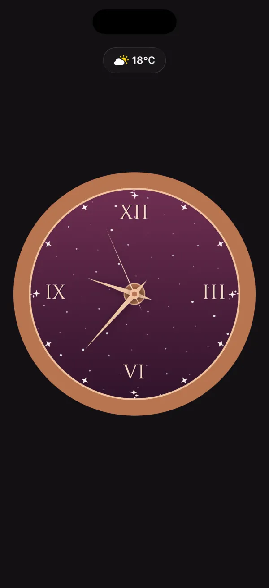
NightlifeTimepieces
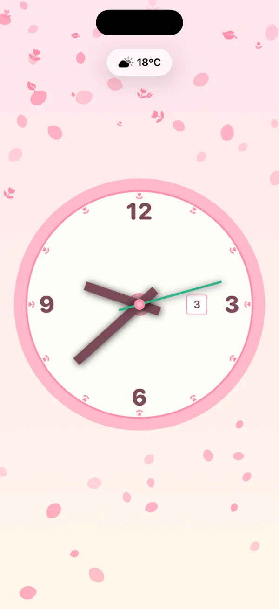
Sakura PopPop
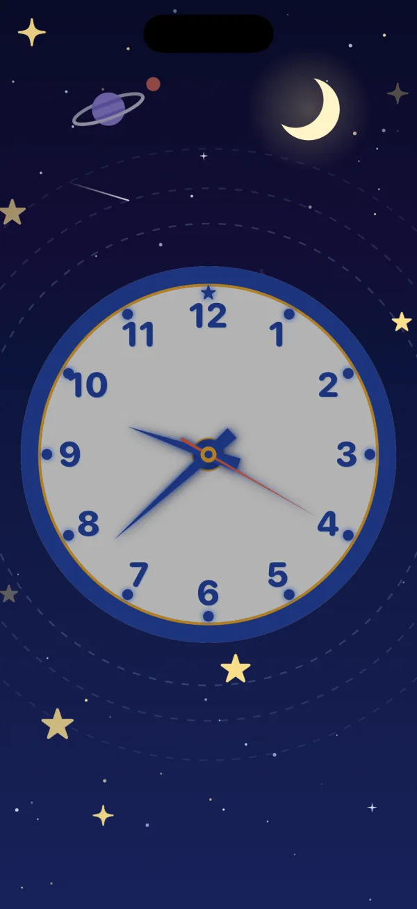
Space CadetPlayful
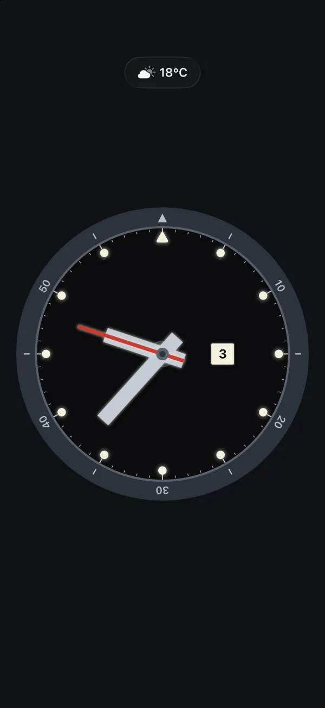
TideTimepieces
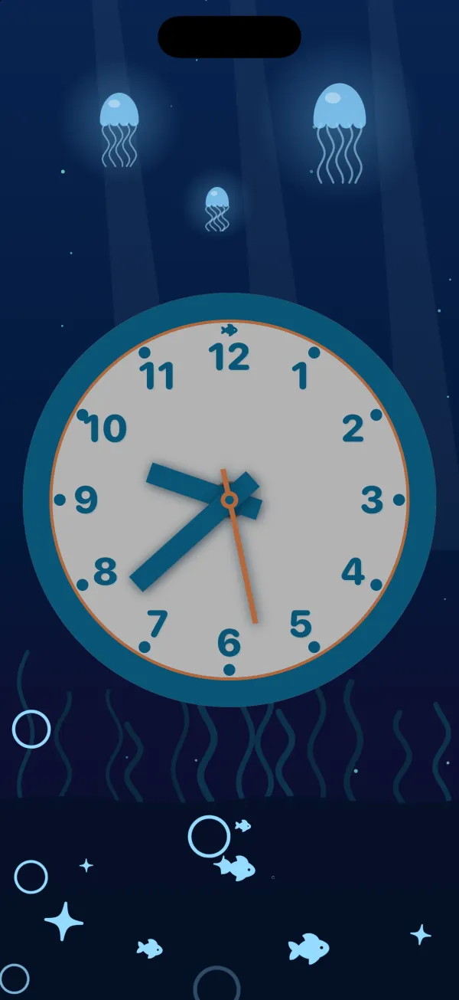
Under the SeaPlayful
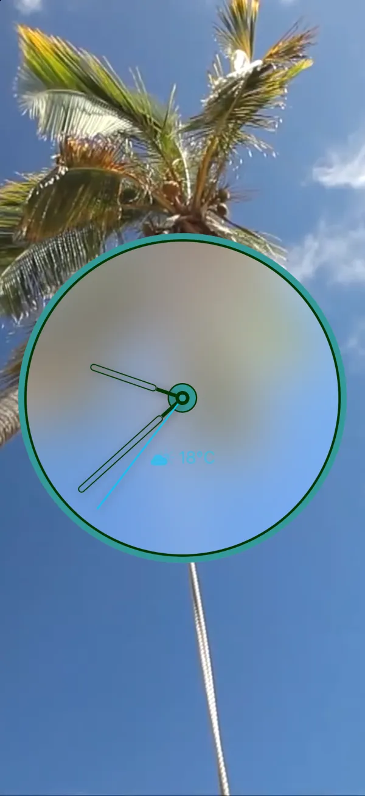
Fiji IslandsVideos
Features
Make it yours, keep it on all day
The Studio
Change everything: dial colour and texture, frame and bezel, hands, numerals, markers, date window and subdials. Add a photo or a video as background, drifting shapes, ticking and morning sounds, and save as many designs of your own as you like.
Weather on the dial
The current weather sits on the dial or in the bar at the top, depending on the design, with an hourly forecast one tap away. It comes from Apple Weather.
Day and night
Night mode dims the face at the hour you choose, with its own background if you like, and a morning sound can greet the new day. A screensaver spares displays that show the clock all day.
An icon to match
The app icon changes to match the design you pick, on iPhone, iPad and Apple TV.
Apple TV
The big screen in the living room
Swipe down into the clock and the tab bar hides, so only the clock is on screen. Press Select for the hourly forecast. The Apple TV app comes with the same purchase.
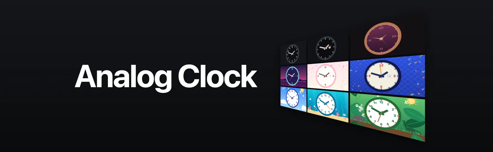
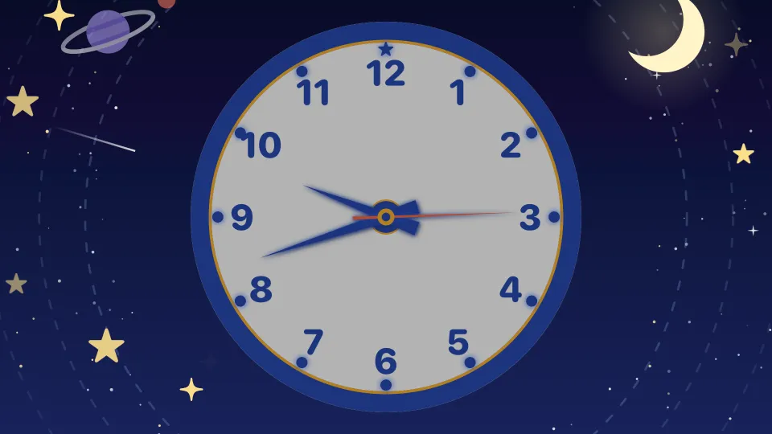
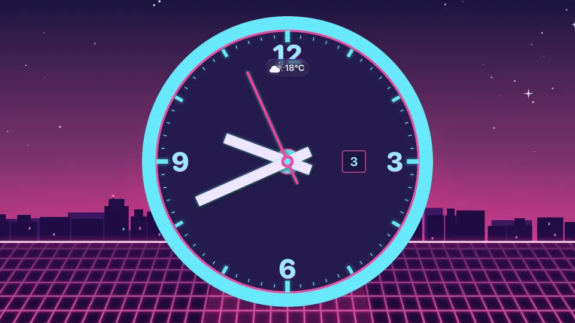
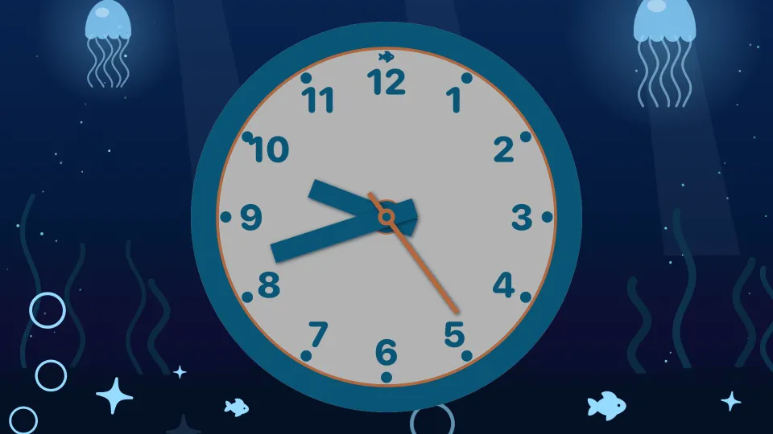
iPad
A clock on the kitchen shelf
Tap the clock to show the controls; they fade away again after a few seconds. In the Gallery, touch and hold a design to customize it.
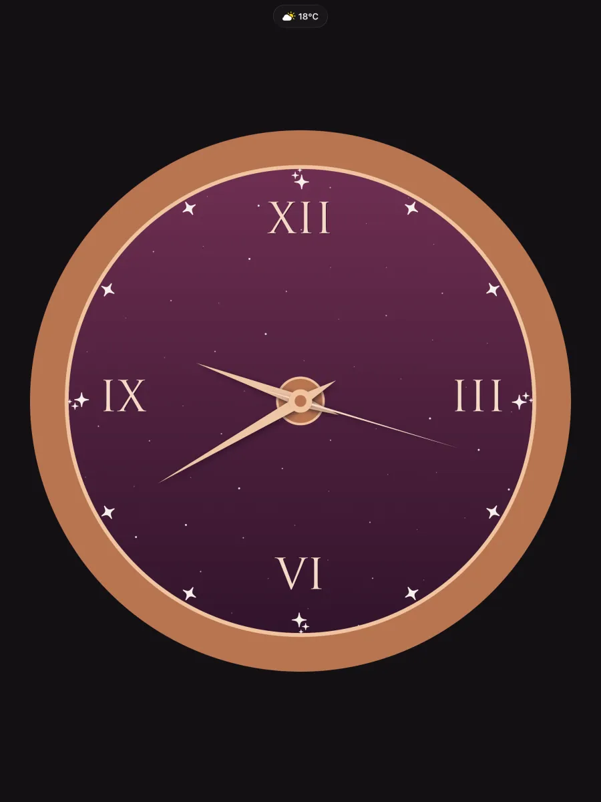
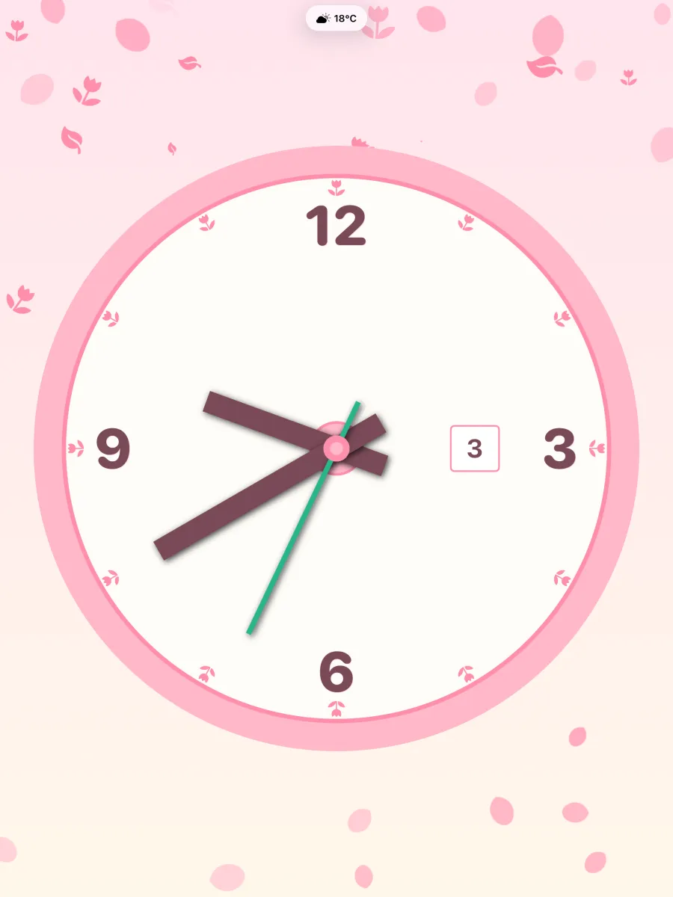
Privacy
No account, no analytics, no ads
The weather needs your approximate location, and YouTube video designs load from YouTube. That is all. Read the privacy policy.